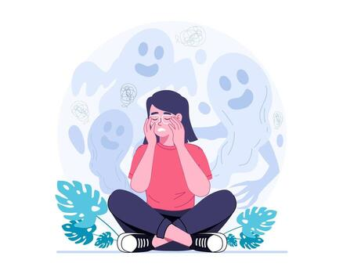
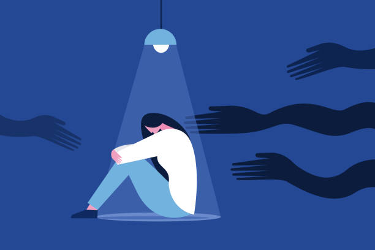

A fobia social é um transtorno de ansiedade que envolve medo intenso e persistente de situações sociais em que a pessoa possa ser julgada ou avaliada por outras pessoas.


A fobia social, também conhecida como transtorno de ansiedade social, é caracterizada pelo medo exagerado de interações sociais ou de ser exposto ao julgamento dos outros.
Esse medo pode interferir significativamente na vida pessoal, acadêmica, profissional e nos relacionamentos.
Cada pessoa pode vivenciar a fobia social de forma diferente, mas algumas características são comuns:
Preocupação excessiva com apresentações, conversas e situações sociais.
Medo constante de ser criticado, avaliado ou constrangido.
Tendência a evitar situações sociais por medo ou desconforto.
Dificuldade em estudos, trabalho, amizades e vida pessoal.
Compreender a fobia social é essencial para buscar ajuda e encontrar o tratamento adequado.